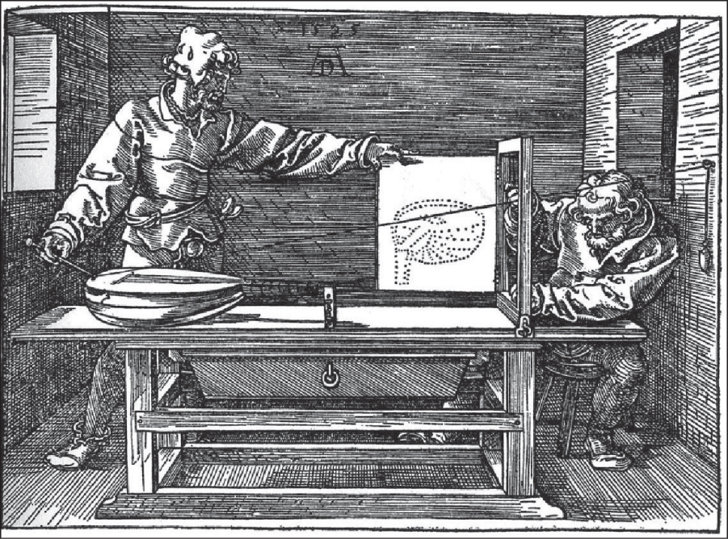
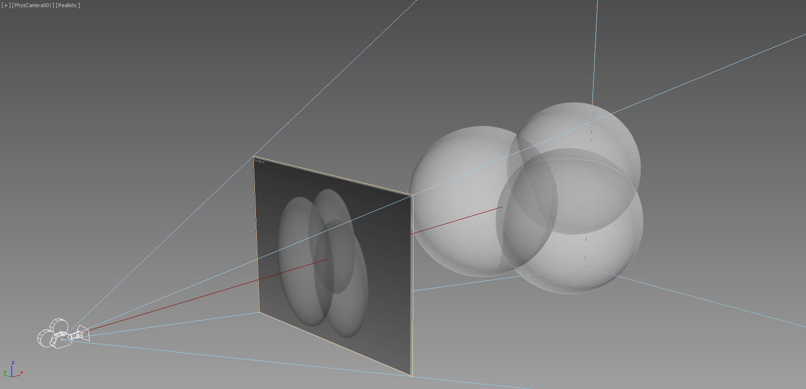
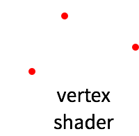
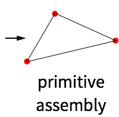
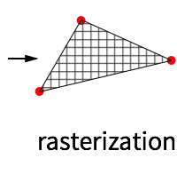
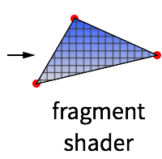

3D on the Web
Created by Denis Grigor
What is 3D?

There is no spoon 3D on a screen
An Ancient Renderer [1525]
from Computer Graphics: Principles and Practice, Third Edition
All you see is just an illusion a projection.

- from of an imagined 3D content
- to a 2D array of pixels
We could do that before?
GPU for the Web.
- Based on OpenGL ES
- Meant for browsers
WebGL
programmable
graphics pipeline





WebGL 101
Setting up the scene with a canvas and a background
WebGL output
//2D points with direct screen coordinates
var vertices = new Float32Array([
0, 0.9,
0.9, -0.6,
-0.9, -0.6
]);
Vertex Shader
// vertex shader
var vertexShader = gl.createShader(gl.VERTEX_SHADER);
gl.shaderSource(vertexShader, [
'attribute vec2 position;', // pass in attribute
'void main() {', // every shader needs a main func
'gl_Position = vec4(position, 0.1, 1.0);', // set a position
'}'
].join('\n'));
gl.compileShader(vertexShader);Fragment Shader
// fragment shader
var fragmentShader = gl.createShader(gl.FRAGMENT_SHADER);
gl.shaderSource(fragmentShader, [
'precision highp float;',
'uniform vec4 color;',
'void main() {',
'gl_FragColor = color;',
'}'
].join('\n'));
gl.compileShader(fragmentShader);Bind the shaders together, draw vertices etc
var program = gl.createProgram();
gl.attachShader(program, vertexShader);
gl.attachShader(program, fragmentShader);
gl.linkProgram(program);
var vertices = new Float32Array([
0, 0.9,
0.9, -0.6,
-0.9, -0.6
]);
var buffer = gl.createBuffer();
gl.bindBuffer(gl.ARRAY_BUFFER, buffer);
gl.bufferData(gl.ARRAY_BUFFER, new Float32Array(vertices), gl.STATIC_DRAW);
gl.useProgram(program);
program.color = gl.getUniformLocation(program, 'color');
gl.uniform4fv(program.color, [0, 0, 0, 1.0]);
program.position = gl.getAttribLocation(program, 'position');
gl.enableVertexAttribArray(program.position);
gl.vertexAttribPointer(program.position, 2, gl.FLOAT, false, 0, 0);
gl.drawArrays(gl.TRIANGLES, 0, vertices.length / 2);